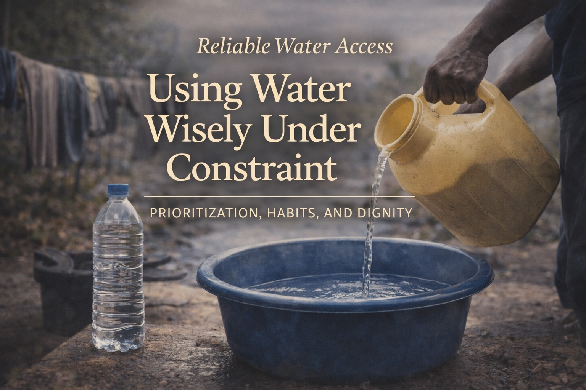

Reliable Water Access: Using Water Wisely Under Constraint
Last updated: February 2026

- Prioritization extends supply. Calm sequencing matters more than strict rationing.
- Habits beat rules. Small behavior changes compound quickly.
- Dignity matters. Sustainable use preserves morale and clarity.
- Constraint is temporary. Your goal is continuity, not endurance contests.
Purpose: Help you extend available water calmly during temporary constraints by prioritizing essential use, adjusting habits, and maintaining dignity and clarity. This is about continuity, not deprivation.
Constraint changes behavior, not identity
Water constraints often arrive quietly: a boil notice, an outage, a supply interruption. The danger is not shortage itself, but the stress it introduces.
A calm approach treats constraint as a temporary operating mode, not a crisis identity. You are adapting, not enduring.
Start with clear priorities
Wise water use begins with clarity. When supply is limited, not all uses are equal.
- Drinking is non-negotiable.
- Basic hygiene and sanitation preserve health.
- Convenience uses can pause without harm.
Clear priorities reduce anxiety. Anxiety drives waste.
Small habit changes that matter
You do not need austerity to extend supply. Small, thoughtful adjustments compound quickly:
- Turn water off between steps.
- Reuse clean water where appropriate.
- Favor wipes, cloths, or targeted cleaning over full rinses.
These habits feel normal within hours. That normalization preserves morale.
Avoid the rationing mindset
Strict rationing often backfires. It creates stress, fixation, and rebellion against the system itself.
A better approach is flow control: guide usage gently through routines and cues rather than rigid limits.
Calm systems last longer than harsh rules.
Greywater thinking (without complexity)
Greywater does not require plumbing projects. At a conceptual level, it means recognizing that not all water needs to be pristine.
Water used for washing hands or produce can sometimes serve a second purpose (such as cleaning surfaces or flushing) if done thoughtfully and safely.
The principle is reuse with care, not improvisation under pressure.
Communicate expectations early
Shared water systems fail when expectations are unclear. Calm communication prevents silent conflict.
Explain priorities, duration, and the plan to return to normal. People cooperate better when they understand the purpose.
Returning to normal matters
One overlooked step is recovery. When supply stabilizes, consciously return to normal habits.
This signals safety and prevents constraint behaviors from becoming chronic stressors.
How this completes Reliable Water Access
This article closes the Reliable Water Access series:
- Water First — Securing Reliable Supply
- Treating Water Safely and Simply
- Using Water Wisely Under Constraint
This article is for general education and practical planning. Follow local advisories and health guidance during water disruptions.